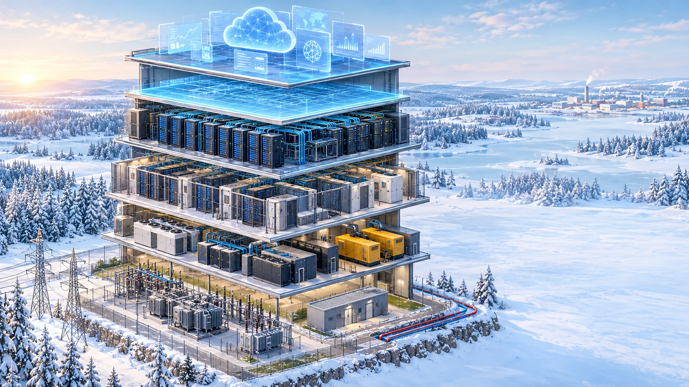

Jokaisessa mallissa on koko datakeskus kiinteistöstä sovelluksiin. Mallit eroavat siinä, kuinka suuren osan yritys hoitaa itse ja kuinka suuren se ostaa vastapuolelta.
Vertauskuvana datakeskus on tehdas ja palvelimet sen tuotantokoneet: pilvessä ostetaan tehtaan tuotantoa, colocationissa omat koneet sijoitetaan toisen tehtaaseen ja omassa datakeskuksessa koko tehdas on oma.

ItseJaettu tai riippuu palvelusta tai sopimuksestaVastapuoliVastuuraja
Itse = yritys, joka tarvitsee laskentakapasiteettia. Vastapuoli = yhtiö, jolta se ostaa loput: CSP, GPU-pilvi, colocation-operaattori tai datakeskusoperaattori.
Vastuuraja (demarc): kohta, jossa vastapuolen vastuu päättyy ja yrityksen oma vastuu alkaa. Pilvimalleissa raja on piirretty tyypilliseen kohtaansa, ja vaalea alue näyttää, minne se voi siirtyä.
Vastapuoli lupaa palvelutasosopimuksessa (SLA) käytettävyyden tason ja hyvittää osan maksusta, jos taso ei täyty. Lupaus kattaa sen, mitä vastuurajan alapuolella on: colocationissa esimerkiksi sähkön ja jäähdytyksen, pilvessä itse palvelun.
CSP (cloud service provider) = pilvipalveluyhtiö · colocation = vuokrattu konesalitila omille laitteille · turnkey = käyttövalmis sali sähkö- ja jäähdytysjärjestelmineen · powered shell = rakennus valmiine sähköliittymineen, tekniikka on vuokralaisen.
Raja riippuu ostetusta palvelusta: IaaS:ssä yritys hallitsee käyttöjärjestelmän, PaaS- ja SaaS-palveluissa vastapuoli hoitaa enemmän (shared responsibility model).
Kuka hoitaa kunkin osan eri malleissa
Julkinen pilvi
GPU-pilvi2
Retail-colocation
Wholesale-colocation
Oma datakeskus
SOVELLUKSET JA DATA
Sovellukset ja tekoälymallit
Itse
Itse
Itse
Itse
Itse
Data
Itse
Itse
Itse
Itse
Itse
ALUSTA
Käyttöjärjestelmä ja ohjelmistokirjastot
Jaettu: IaaS itse, PaaS CSP
Itse
Itse
Itse
Itse
Virtualisointi ja klusterin hallinta
CSP
Itse (bare metal) / GPU-pilvi (hallittu)
Itse
Itse
Itse
LAITTEET
Palvelimet ja tallennus
CSP
GPU-pilvi
Itse
Itse
Itse
Verkkolaitteet
CSP
GPU-pilvi
Itse
Itse
Itse
KONESALI
Räkit ja sähkönsyöttö räkkiin
CSP
GPU-pilvi
Colocation-operaattori
Itse
Itse
Jäähdytys (ilma tai neste)
CSP
GPU-pilvi
Colocation-operaattori
Turnkey: operaattori · Powered shell: itse
Itse
UPS ja varavoima
CSP
GPU-pilvi
Colocation-operaattori
Turnkey: operaattori · Powered shell: itse
Itse
Kulunvalvonta ja fyysinen turvallisuus
CSP
GPU-pilvi
Colocation-operaattori
Turnkey: operaattori · Powered shell: itse
Itse
KIINTEISTÖ JA ENERGIA
Tontti ja rakennus
CSP
GPU-pilvi
Colocation-operaattori
Datakeskusoperaattori
Itse
Sähköliittymä ja muuntamo1
CSP
GPU-pilvi
Colocation-operaattori
Datakeskusoperaattori
Itse
Sähkön hankinta
CSP
GPU-pilvi
Colocation-operaattori3
Itse tai läpilaskutettuna
Itse
Rakennus- ja ympäristöluvat
CSP
GPU-pilvi
Colocation-operaattori
Datakeskusoperaattori
Itse
Verkkoyhtiö vastaa verkosta liittymispisteeseen asti.
GPU-pilvi voi toimia omassa tai colocation-operaattorin datakeskuksessa.
Sähkö laskutetaan yleensä operaattorin laskulla (kW tai kWh).
Kerrokset eivät näytä kaikkia eroja.
Julkinen pilvi ja GPU-pilvi: ero on ennen kaikkea sitoumuksessa. GPU-pilvessä kapasiteetti varataan usein omaan käyttöön monivuotisella sopimuksella.
Retail ja wholesale: ero on mittakaavassa ja sopimuksessa. Wholesale on kokonainen sali tai rakennus 5–15 vuoden vuokrasopimuksella.
Retail-colocationin arvoa lisää myös verkkoekosysteemi: samassa rakennuksessa toimivat operaattorit ja pilvipalvelut, joihin voi kytkeytyä suoraan (cross-connect). Wholesale-asiakkaalle tärkeämpiä ovat sähkökapasiteetti ja jäähdytys.
Pilvimalleissa vastuuraja riippuu myös ostetusta palvelusta.
Itsehoitaayritys hoitaa itseVastuurajaVastuuraja, tyypillisestiVastuuraja: turnkeyVastuuraja: powered shellIaaSPaaSSaaShallittu palveluPiilota rinnakkaisnäkymä← Takaisin yhteenvetoon
Liittymispiste
Liittymispiste: verkkoyhtiön vastuu päättyy tähän. Sähkö ostetaan erikseen (rivi Sähkön hankinta). Kohta on sama kaikissa malleissa, myös omassa datakeskuksessa.
Hukkalämpö kaukolämpöverkkoon
Datakeskuksen omistaja tai operaattori voi myydä palvelinten hukkalämmön kaukolämpöyhtiölle. Mäntsälän datakeskus on myynyt hukkalämpöä paikalliseen kaukolämpöverkkoon vuodesta 2015; sen rakensi Yandex, nykyään se on Nebiuksen. Microsoftin ja Fortumin sopimuksessa hukkalämmön talteenotto Microsoftin datakeskuksista Espoossa ja Kirkkonummella alkaa vaiheittain vuodesta 2027.
Se, mitä varten kapasiteettia tarvitaan: sovellukset, tekoälymallit, niiden data ja käyttöjärjestelmä.
Kerros, joka jakaa laitteiden kapasiteetin käyttöön: virtualisointi ja klusterin hallinta.
Laitteet, jotka tekevät varsinaisen laskennan ja tallennuksen: palvelimet, tallennusjärjestelmät ja verkkolaitteet.
Tila, johon IT-laitteet asennetaan: räkit, häkit ja sähkönsyöttö räkkiin. Täällä ei itse lasketa mitään.
Järjestelmät, jotka pitävät salin käynnissä: jäähdytys, UPS, varavoima ja kulunvalvonta.
Tontti, rakennus, sähköliittymä ja muuntamo, sähkön hankinta ja luvat.
Kahdennus: sähkönsyöttö, UPS, varavoima ja jäähdytys rakennetaan varalaittein (esim. N+1 tai 2N), jotta yhden laitteen vika tai huolto ei pysäytä toimintaa. Siksi samankokoiset datakeskukset voivat olla hyvin eri hintaisia rakentaa ja ylläpitää; sähkö- ja jäähdytysjärjestelmät ovat rakennuksen suurin kustannuserä.
Yritys hoitaa sovellukset ja datan, IaaS-palvelussa myös käyttöjärjestelmän. Pilvipalveluyhtiö (CSP), esimerkiksi Microsoft, Google tai Amazon, hoitaa kaiken muun virtualisoinnista kiinteistöön.
Yritys hoitaa sovellukset, datan ja käyttöjärjestelmän, bare metal -palvelussa myös klusterin hallinnan. GPU-pilviyhtiö, esimerkiksi CoreWeave, Nebius tai Lambda, hoitaa laitteet, konesalin ja kiinteistön.
Yritys omistaa ja hoitaa palvelimensa ja verkkolaitteensa. Colocation-operaattori, esimerkiksi Equinix, Digital Realty tai Telia, hoitaa räkkitilan, sähkön, jäähdytyksen ja kiinteistön.
Yritys vuokraa kokonaisen salin tai rakennuksen ja kalustaa sen. Turnkey-mallissa operaattori hoitaa jäähdytyksen, UPS:n, varavoiman ja kulunvalvonnan; powered shell -mallissa yritys rakentaa nekin itse. Rakennuksen ja sähköliittymän tarjoaa datakeskusoperaattori, esimerkiksi Digital Realty tai Equinix.
Yritys hoitaa kaiken tontista sovelluksiin. Verkkoyhtiön (esimerkiksi Fingrid tai Caruna) vastuu päättyy liittymispisteeseen.
Yllä rakenne yleisesti. Alla samat mallit kuvitteellisen AI Oy:n kasvupolkuna: miksi yritys siirtyy mallista toiseen ja mitä se ostaa, sitoo ja riskeeraa.
AI OY:N KASVUPOLKU
Joustava, ei sidottua pääomaa, kallis yksikköhinta
Halvempi kapasiteetti, mutta enemmän pääomaa, sitoumuksia ja riskiä
Pitkä ketju, neljä yhtiötä: OpenAI:n Stargate-datakeskus Abilenessa, Teksasissa
Crusoe ja Blue Owl
omistavat kampuksen
kampus →
← vuokra 15 v
Oracle
omistaa GPU:t
VAIHE 4
laskenta →
← kapasiteettimaksu
OpenAI
ostaa laskentaa
VAIHE 2
palvelu →
← tilausmaksu
Käyttäjät
Lyhyt ketju, yksi yhtiö: Google omistaa ja operoi kaiken itse
Google
omistaa kaiken
VAIHE 5
laskenta →
← käyttömaksu
AI Oy
ostaa laskentaa
VAIHE 1
palvelu →
← tilausmaksu
Käyttäjät
Vaihetunnus kertoo, mikä malli ketju on kunkin yhtiön näkökulmasta. Oraclelle Abilene on wholesale-vuokraus, OpenAI:lle ostettua kapasiteettia. Jokainen kerros omistaa eri varat, kantaa eri riskit ja saa oman osuutensa tulosta.
Pilvijättien vuokrakapasiteetti:AWS, Microsoft ja Google vuokraavat osan kapasiteetistaan colocation-yhtiöiltä ja GPU-pilviltä. Wholesale-kysynnän suurin lähde.
Interconnection:tulot syntyvät verkkojen välisistä kytkennöistä, ei vain tilasta (esim. Equinix, FICIX).
Edge-datakeskukset:pienet keskukset lähellä käyttäjiä matalan viiveen vuoksi.
Kehitys- ja rahoitusmallit:kiinteistön voi omistaa rahasto, REIT tai rakennuttaja, joka vuokraa sen operaattorille (esim. build-to-suit, sale-leaseback).
Hukkalämpö:datakeskus myy lämmön kaukolämpöverkkoon (esim. Nebius Mäntsälässä).
VIISI ASIAA MUISTAA
1
Vuokra vai palvelu? Mallit eroavat siinä, mitä AI Oy ostaa: tilan käyttöoikeutta vai valmista kapasiteettia.
2
Operointi ei ole omistusta. Rakennus voi olla sijoittajan, laitteet AI Oy:n ja operointi kolmannen osapuolen.
3
Halvempi hinta vaatii enemmän riskiä. Esim. GPU-pilven asiakas maksaa varatusta kapasiteetista, vaikka ei käyttäisi sitä.
4
Mallit ketjuuntuvat. Saman palvelun takana voi olla useita yhtiöitä eri rooleissa ja eri maissa.
5
Rahoitus perustuu asiakkaan sitoumukseen ja luottokelpoisuuteen, ei pelkkään kiinteistöön. Pitkä sopimus tekee kassavirrasta ennustettavan, ja luottokelpoisuus ratkaisee lainan hinnan.
Termit: julkinen pilvi (public cloud) = kaupallinen, monen asiakkaan jakama pilvipalvelu, ei julkisen sektorin pilvi · colocation = vuokrattu konesalitila omille laitteille · retail = räkkejä tai pieniä tiloja monelle asiakkaalle · wholesale = kokonainen sali tai rakennus yhdelle vuokralaiselle · räkki = laitekaappi · cross-connect = suora kaapeliyhteys osapuolten välillä · remote hands = operaattorin tekemät laitetyöt · take-or-pay = maksu käytöstä riippumatta · käyttöaste = kuka maksaa, jos varattu kapasiteetti jää käyttämättä; vuokraamattoman tai myymättömän kapasiteetin riski on vastapuolella (CSP:llä, GPU-pilvellä tai operaattorilla). AI Oy on kuvitteellinen; muut yhtiöt ovat todellisia. Sopimuskestot ovat suuntaa-antavia. Lähteet: yhtiöiden julkaisut ja alan uutisointi. Rakennuksen omistaja- ja sähkörivit perustuvat yhtiöiden vuosikertomuksiin (Microsoft, CoreWeave, Equinix, Digital Realty; 10-K, tilikaudet 2025–2026), tarkistettu 10/2026.